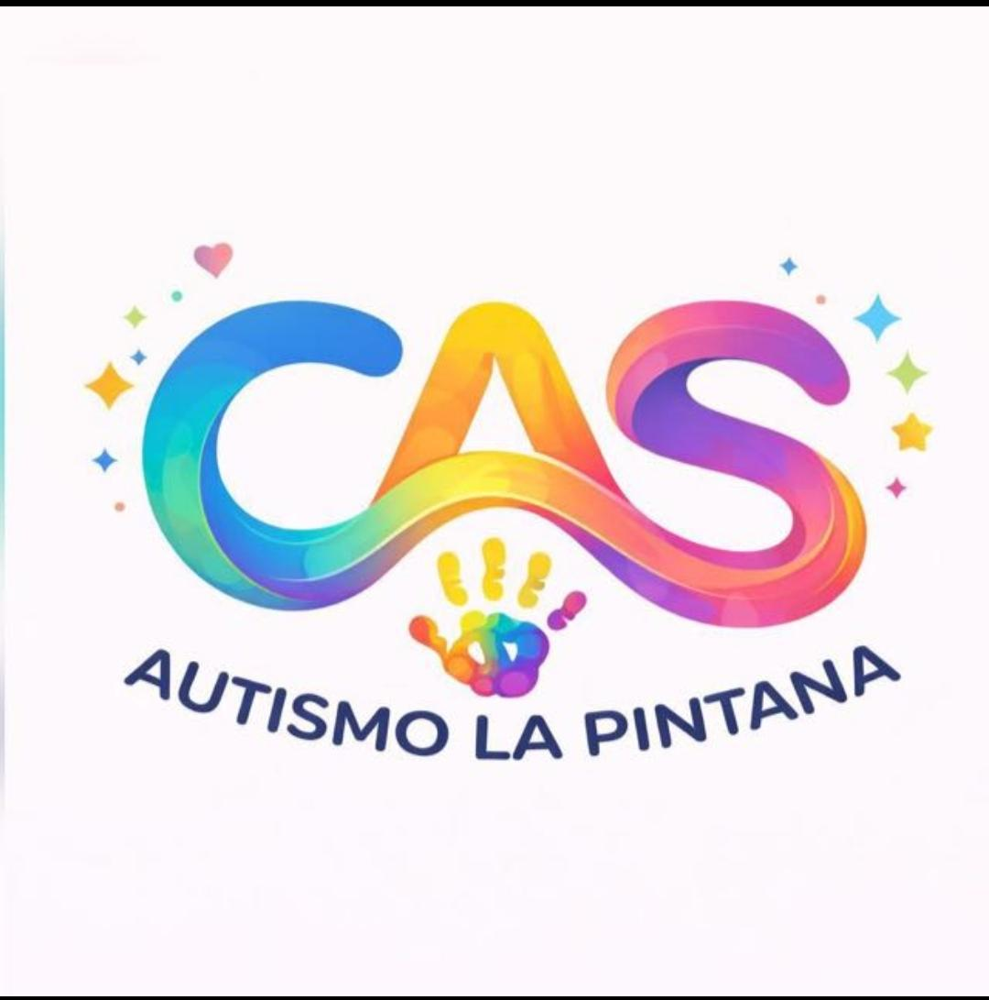
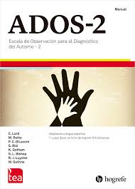
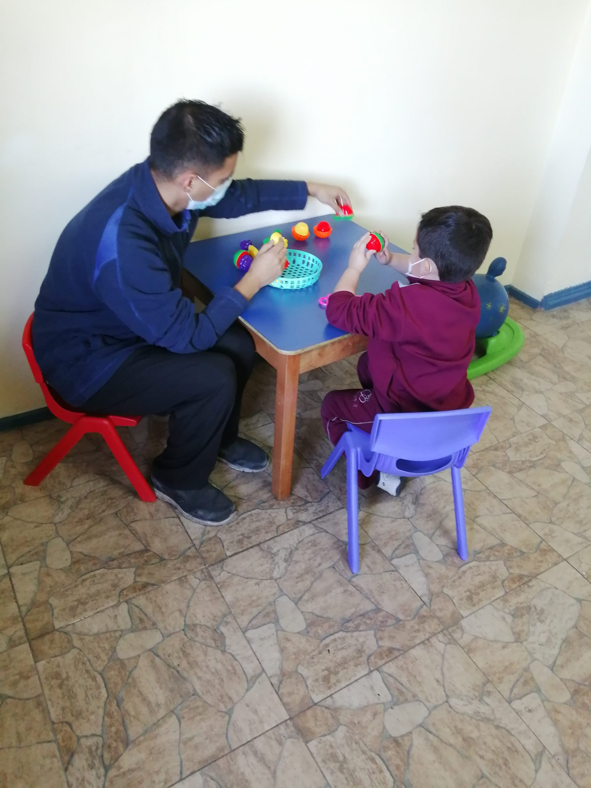
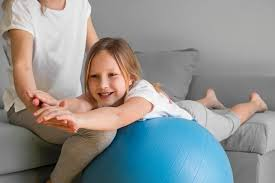
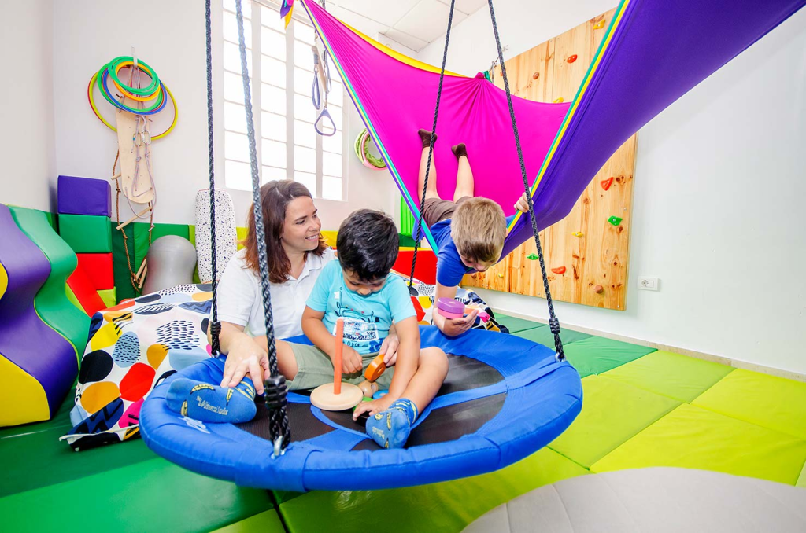
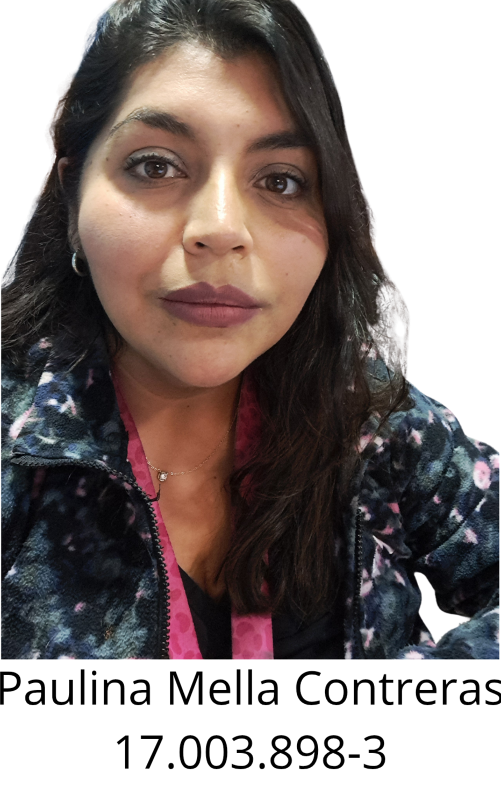
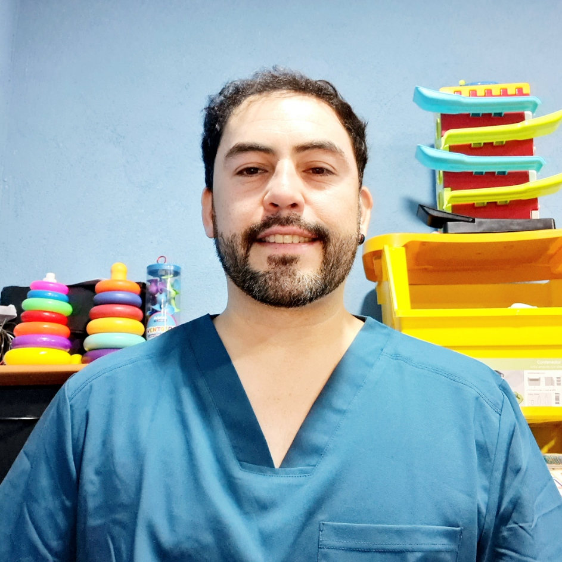

Realizamos evaluaciones fundamentales para iniciar, detectar y seguir el proceso terapeutico de cada niño.

Evaluación ADOS

Evaluación PEP-3
Ofrecemos terapias especializadas para abordar las necesidades individuales de cada niño, promoviendo su desarrollo integral.
Terapia de Fonoaudiología

Terapia de Kinesiología

Terapia Ocupacional
Terapia de Psicología
Contamos con un equipo de terapeutas especializados en cada área, comprometidos con el bienestar y desarrollo de cada niño.

Diego Bustamante - Fonoaudiólogo

Paulina Mella - Kinesióloga

Ivan Correa - Terapeuta Ocupacional